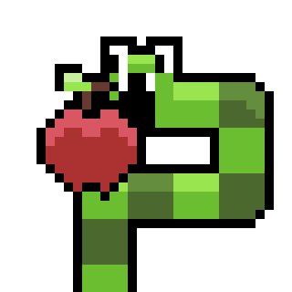

About Me
I'm a Computer Science student interested in software development, game development, and data-focused applications.
Projects
Academic
Movie Hub

A full-stack movie and television review aggregation website. - Built a REST API for movies, shows, users, and reviews - MongoDB database - React frontend - User authentication with JWT
View on GitHubSnakeBoy

A team-developed recreation of the classic game Snake, built using an Arduino Uno and a custom 3D-printed enclosure. - Programmed the game's core Snake mechanics in C++ - Integrated physical controls and a display with the Arduino Uno - Designed and assembled the project within a custom 3D-printed case
View on GitHubPantryPal
A team-developed web application for tracking household groceries and pantry information. - Integrates with the Kroger API - Tracks pantry inventory and expiration information - Provides household spending and pantry insights